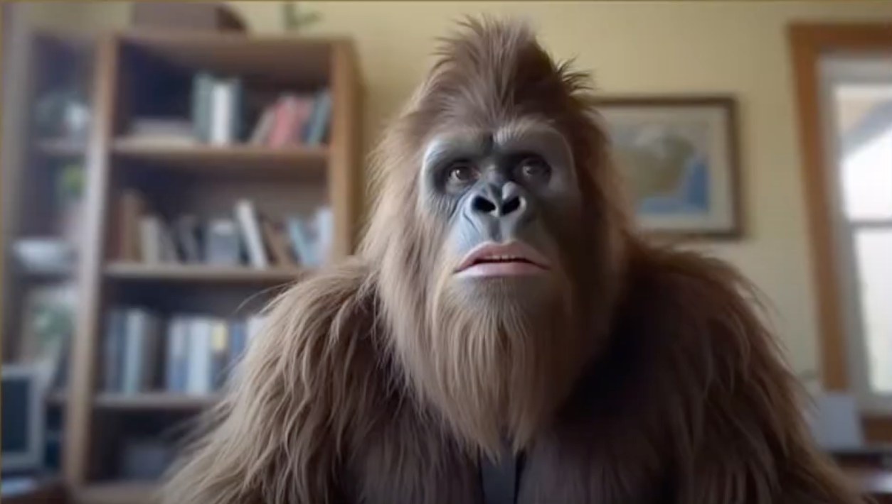

Ever feel lost in the wilderness of life? Let Coach Squatch guide you through the forest of business and personal decisions. Dressed as the elusive Sasquatch, he brings a unique perspective and a hearty dose of wisdom to every call.
Subscribe now and get the guidance you need – join Coach Squatch on OnlyFans!